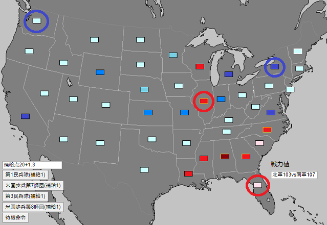

1930年代に起きた架空の第二次アメリカ内戦を指揮するゲームです。
AIは存在しないため、両陣営をプレイヤーが担当するソロプレイ専用ゲームとなっています。
PC専用です。(スマホでは操作性が非常に悪い)
ランダム選ばれる4部隊の中から、1部隊を選んで命令します。
選べる命令は「行軍(攻撃)」「強攻」「砲撃」「補充」の4種です。
「行軍(攻撃)」は選択した州に向かって移動、その州に敵軍がいれば1部隊を選んで攻撃する命令です。
攻撃は防御側部隊との戦力差により与えられるダメージ、与えられるダメージが変化します(詳細は下記参照)。
攻撃を受けた側は退却するかどうかの判断をします。退却しない(できない)場合、1ダメージ追加で受けます。
退却先には、敵対陣営の占領している州に隣接していない州しか選べません。
・攻撃ダメージ一覧表
攻撃側戦力が防御側戦力の２倍以上の時（攻撃＞防御×２） 防御側２ダメージ
強攻時：防御側３ダメージ、攻撃側１ダメージ
攻撃側戦力が防御側戦力を上回る時 （攻撃＞防御） 防御側１ダメージ
強攻時：防御側２ダメージ、攻撃側１ダメージ
攻撃側戦力が防衛側戦力以下の時 （攻撃≦防御） 防御側１ダメージ 攻撃側１ダメージ
強攻時：防御側２ダメージ、攻撃側３ダメージ
攻撃側戦力が防衛側戦力の２倍以下の時（攻撃≦防御×２） 防御側１ダメージ 攻撃側２ダメージ
強攻時：防御側２ダメージ、攻撃側４ダメージ
なお防御側は2戦力のボーナスが与えられる。
例えば、戦力6の部隊で戦力5の部隊を攻撃した場合、防御側ボーナスにより攻撃側戦力が防衛側戦力以下になるので、双方に1ダメージとなります。
「強攻」はコチラの受けるダメージも増加する代わりに、相手にもより多くのダメージを与える命令です。
補給下(後述)に無い場合は命令できません。
「砲撃」は相手との戦力差に関係なくダメージを与えられるコマンドです。補給物資(後述)を追加で4消費します。
砲兵部隊を伴う、正規の歩兵師団しか実行できません(予備役部隊、民兵隊、騎兵師団、機甲師団は実行不可)。
「補充」は戦力値を2回復させる命令です。補給物資(後述)を追加で6消費します。補給下(後述)に無い場合は命令できません。
・補給物資
補給物資は毎手番ごとに占領している州の値の10分の1が与えられます。(南軍はボーナスとして+0.4多く貰えます)
部隊を動かしたり、砲撃・補充に使用します。
・包囲
北軍は「ニューヨーク州」(アメリカ北東部)、「ワシントン州」(アメリカ北西部)
南軍は「フロリダ州」(アメリカ南東部)、「イリノイ州」(南軍占領下アメリカ中央部)
が補給拠点となっており、これらの州から自軍占領下の州でつながらない州は包囲下として判定され、全ダメージが2倍になります(死守命令時のダメージは例外)。

・行軍
命令は1手番につき1回ですが、行軍のみ1手番に2度行えます(民兵を除く)。
その際、行軍命令は最初の命令で行わなければなりません。
行える行動 〇行軍→行軍 〇行軍→攻撃 〇行軍→強攻 〇行軍→補充
行えない行動例 ×攻撃→行軍 ×攻撃→攻撃 ×補充→行軍 ×攻撃→強攻 など
機甲師団、騎兵師団は機動軍であり、行軍(攻撃)、強攻、補充の前に2度行軍を行えます。
機動軍の場合 〇行軍→行軍→攻撃 〇行軍→行軍→強攻 ×攻撃→行軍→行軍 ×行軍→攻撃→補充
・操作
左下の選択肢は「1」「2」「3」「4」のキーで選択できます。
「Qキー」「Rキー」で攻撃部隊の選択、「Eキー」でキャンセル選択肢が選べます。
4部隊の中から命令を下す部隊を選ぶときのみ、「Qキー」で選択師団の表示位置を変更できます。
・詳細な仕様
毎ターン、行動できる陣営はランダムに50％の確率で選ばれます。
例えば、4連続で南軍が選ばれる可能性もありますが(6％)、最終的にはどちらの陣営にも行動の機会が回ってくるはずです。
補給拠点は敵側の物を占領しても使用することはできません(例えば北軍がイリノイ州を占領しても、そこから補給は受けられない)。
ウィスコンシン州とミシガン州は隣接していません。ニューヨーク州とミシガン州も隣接していません(間はカナダ領土)。
一方の側の部隊が全滅するとシステム上はゲーム終了となりますが、それ以前に大勢が決した時点でそれ以上遊ぶ意味はあまりありません。
いきなり部隊を動かせと言われても、何を基準に動かせばよいか分からないと思いますので、簡単な指針を以下で示します。
・より戦力の多い部隊で、戦力差が2以上ある部隊を攻撃する
「攻撃ダメージ一覧表」を見ると、攻撃側の戦力＞防御側の戦力の時、ダメージを受けるのは防御側のみですが、
攻撃側の戦力＝防御側の戦力の場合、攻撃側も防御側も等しくダメージを受けます。
ただし、防御側にはボーナスとして2戦力多いものとして計算されますので、例えば戦力4の敵に対しては戦力7以上で攻撃しましょう。
・州を占領しよう
州を占領することで得られる補給の量が増加し、敵側が得られる補給の量が減少します。
補給は部隊を補充するのに必要なため、損害費が1:1でも多くの州を占領していれば回復力で最終的に勝利できます。
・敵を包囲しよう
攻撃を受けた場合、撤退する必要がありますが(撤退しない場合は追加で1ダメージ)、撤退は敵側が占領している州と隣接していない州にしか行えません。
また、補給拠点(ニューヨーク州、ワシントン州、フロリダ州、イリノイ州)から補給を受けられない場合、ダメージは2倍で計算されます。
つまり、敵を自軍包囲下に置き、撤退できなくしたり、補給が受けられなくするだけで、戦闘で非常に有利になれます。
・戦線を形成しよう
逆に敵側に包囲されないためには、戦線を形成する必要があります。
部隊を横一列に並べ、どの州にも部隊が存在するという状況を作ることで、相手側の行動を制限し、包囲されるリスクを減らすことができます。
・戦線を突破しよう
戦線を形成されたとしても、それを突破することで敵を包囲下に置くことができます。
戦線の最も弱い部分、例えば民兵師団が守備している州などに攻撃を集中し、撤退を強要したり、あるいは敵部隊を消滅させることで戦線を突破しましょう。
・砲撃を有効活用しよう
砲撃は戦力差のある敵に対しても、こちらの損害無しでダメージを与えることができます。
特に機甲師団はまともにぶつかると損害が大きいため、砲撃で牽制するのがおすすめです。
ただし砲撃は追加で4補給を使用する点には注意。
・なぜ行動する陣営、部隊がランダムなのか
これは戦闘における不確定性を再現しています。
戦闘においては、常に指揮官は一部の情報しか把握することができません。
我が部隊の士気は高い、と報告してくる部下は自信過剰かもしれませんし、敵部隊の能力は想定よりも高いかもしれません。
天気予報は当たらず、現地には地図に記載のない地形があったり、予想外の農民反乱に悩まされるかもしれません。
そうした指揮官が把握できない要素(戦場の霧)を再現する方法として、次行動できる部隊がどこか分からない、というシステムを採用しています。
本作はボード・ウォーゲームの影響を強く受けています。
本ゲームからウォーゲームに関心を持っていただければ幸いです。